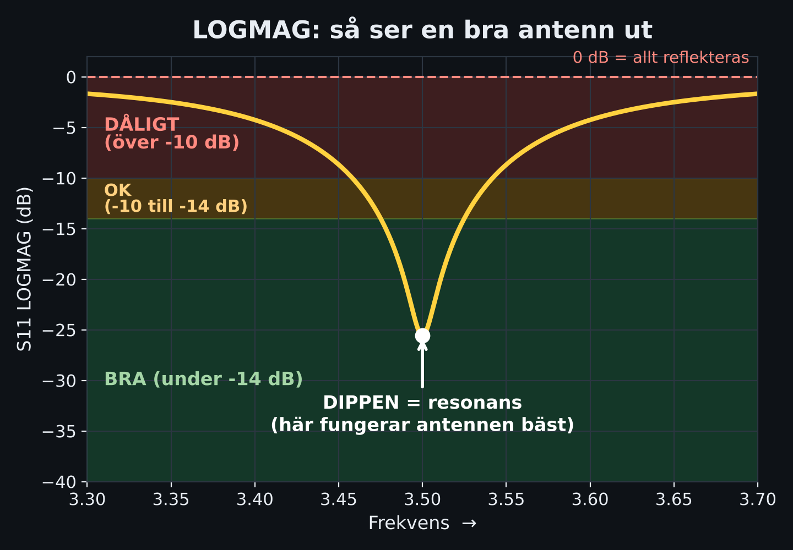
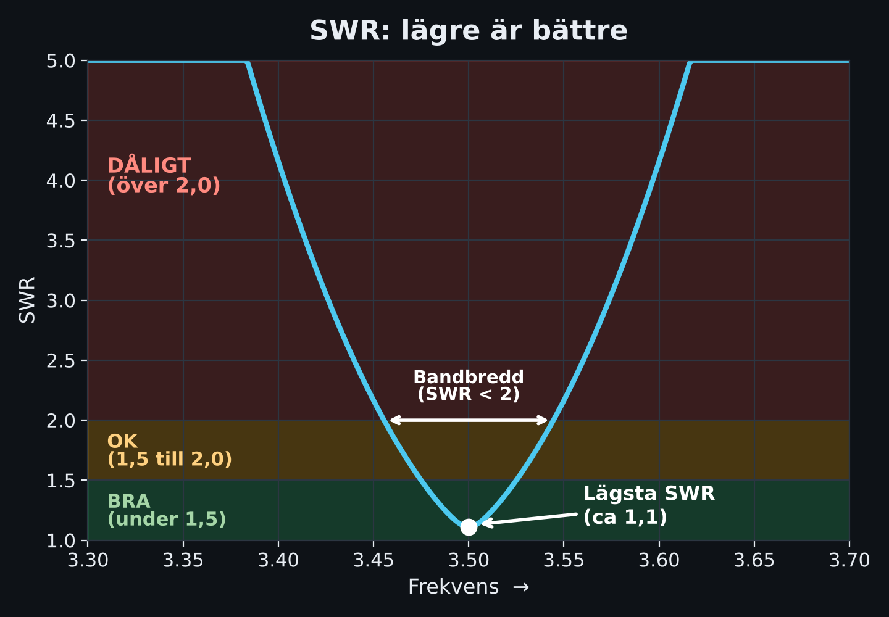
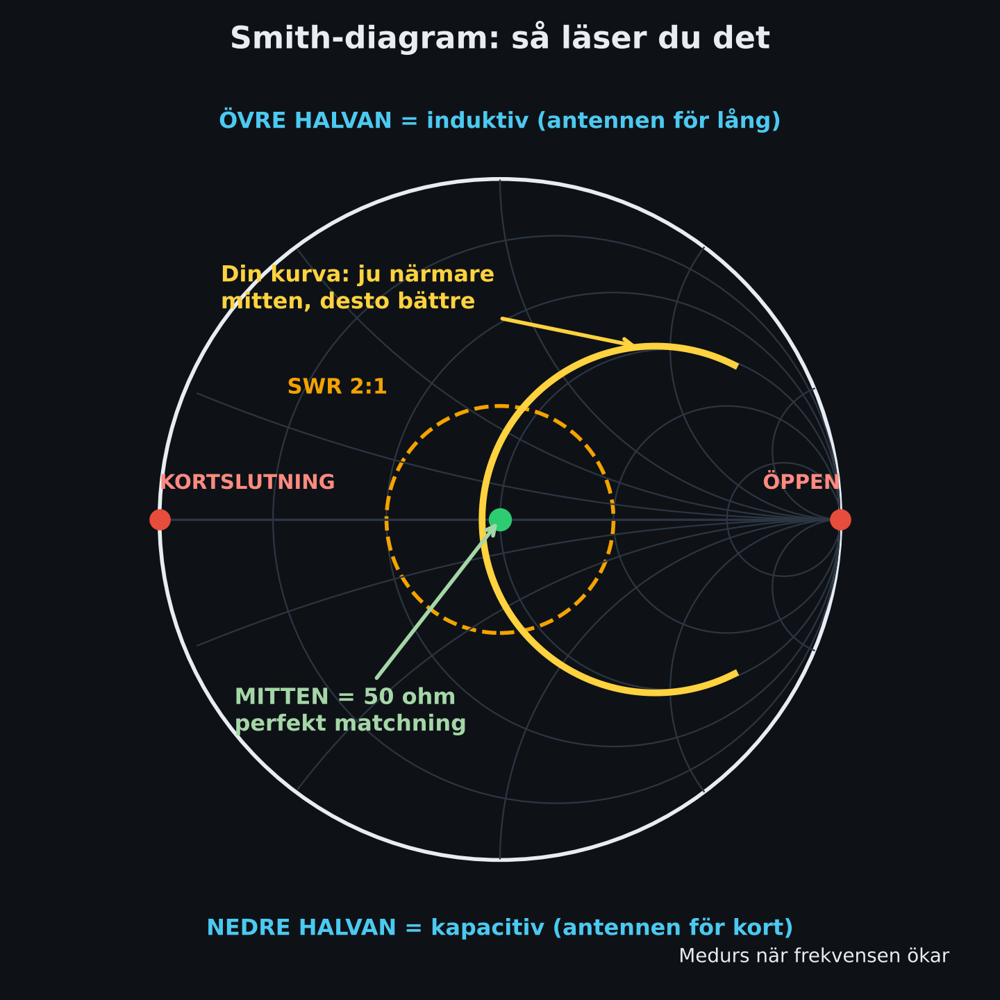
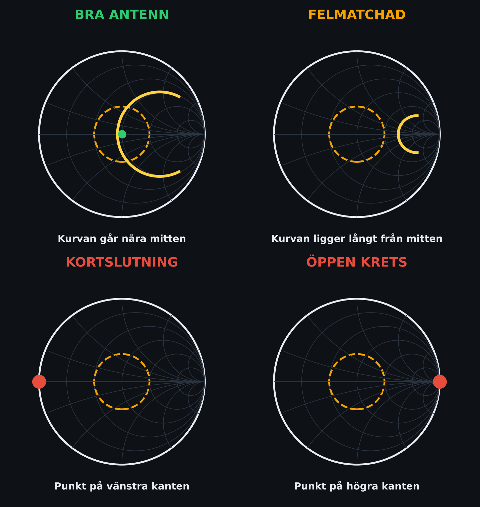
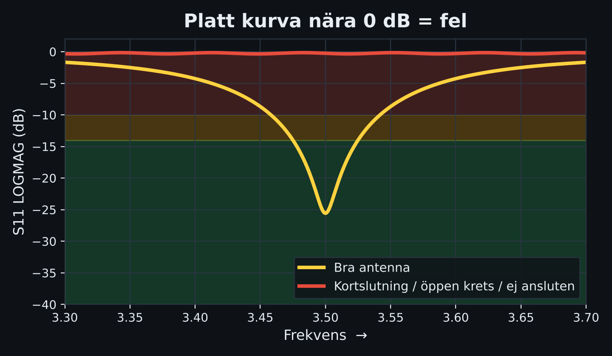

Inställningar
Kompassen i telefonen visar magnetisk nord. Missvisningen ställer om till sann nord. I Göteborgstrakten är den ca +4 till +5° (öst). Kolla gärna aktuellt värde, t.ex. på NOAA:s missvisningskalkylator.
Så använder du det
- Välj mast och tryck Starta. Godkänn plats.
- Håll telefonen platt (eller stående, då är det baksidan som pekar). Håll den borta från metall och magneter.
- Vrid dig tills pilen pekar rakt upp och rutan blir grön (±5°).
- Rikta antennens riktning (loben) åt samma håll. Ligger antennen på ett maströr, håll telefonen längs antennen.
- Verifiera sedan med NanoVNA (SWR/LOGMAG) och, för bästa effekt, signalstyrka.
Master
Lägg till mast
Fungerar med koordinater (57.9045, 12.0184), grader/minuter/sekunder och Google Maps-länkar, även korta länkar (maps.app.goo.gl) när appen har internet.
NanoVNA antennguide
LOGMAG, SWR och Smith: vad som är bra, hur kortslutning ser ut och hur du läser reflektioner.
Snabbsvar: så ser en bra antenn ut
| Vy | Bra | Titta på |
|---|---|---|
| SWR | under 1,5 (bra) under 2,0 (OK) | Lägsta punkten i dippen och bredden under 2,0 |
| LOGMAG (S11) | −14 dB eller lägre (bra) −10 dB (OK) | Djup dipp = lite reflektion. 0 dB = allt reflekteras |
| Smith | Spåret passerar nära mitten (50 ohm) | Avstånd från mitten = reflektion |
Kortslutning och öppen krets: LOGMAG ligger platt nära 0 dB, SWR är mycket högt och Smith-spåret ligger på yttre kanten. Kortslutning ligger till vänster, öppen krets till höger.
1. Förberedelser och kalibrering
- Kalibrera alltid efter att du ställt in START/STOP. Ändrar du sweepen efteråt blir mätningen osäker.
- Kalibrera på CH0 med OPEN, SHORT och LOAD (50 ohm), sedan DONE och spara i ett minne.
- Kalibrera i samma punkt som du ansluter det du mäter: vid kabelns ände om du mäter via kabel.
- Kontroll: med en 50 ohm-last ska SWR vara nära 1,0 och LOGMAG lägre än −35 dB.
- Sätt mätområdet 2–3 gånger bredare än bandet så du ser var dippen verkligen ligger.
- Dra SMA-kontakterna ordentligt. Lösa kontakter ger hoppiga kurvor.
2. LOGMAG (S11, återförlust)

LOGMAG på S11 visar hur många dB som kommer tillbaka från antennen. Ju mer negativt, desto bättre. 0 dB betyder att allt reflekteras.
Du letar efter en dipp. Dippens frekvens är antennens resonans. Ligger den över önskad frekvens är antennen för kort, under är den för lång.
SWR, återförlust och reflekterad effekt
| SWR | LOGMAG | Reflekt. | Bedömning |
|---|---|---|---|
| 1,1 | −26,4 dB | 0,2 % | Utmärkt |
| 1,2 | −20,8 dB | 0,8 % | Mycket bra |
| 1,3 | −17,7 dB | 1,7 % | Bra |
| 1,5 | −14,0 dB | 4,0 % | Bra / godkänt |
| 1,8 | −10,9 dB | 8,2 % | Godkänt |
| 2,0 | −9,5 dB | 11,1 % | Gräns för OK |
| 3,0 | −6,0 dB | 25 % | Dåligt |
| 5,0 | −3,5 dB | 44 % | Mycket dåligt |
| 10 | −1,7 dB | 67 % | Nästan kortslutet/öppet |
|Γ| = (SWR − 1)/(SWR + 1). Återförlust = −20·log10(|Γ|).
3. SWR-vyn

- SWR 1,0 är perfekt. Mycket högt värde (999) betyder nästan total reflektion.
- Bandbredd = frekvensområdet där SWR är under 2,0 (eller 1,5 om du vill vara striktare). Läs av med markörer.
- Lägsta SWR hamnar inte alltid exakt där reaktansen är noll. För antennjustering är lägsta SWR det som räknas i praktiken.
- Mycket lågt SWR på lång, dålig koax kan vara falskt bra: kabelförlusten döljer reflektionen. Mät helst vid antennen.
4. Smith-diagrammet

- Mitten = 50 ohm, perfekt matchning (SWR 1,0).
- Vänstra kanten = kortslutning. Högra kanten = öppen krets.
- Övre halvan = induktiv: antennen för lång eller frekvensen för hög.
- Nedre halvan = kapacitiv: antennen för kort eller frekvensen för låg.
- Horisontella axeln = ren resistans, ingen reaktans (resonans).
- Avstånd från mitten = hur stor reflektionen är. Cirklar runt mitten är konstant SWR. Den streckade är SWR 2:1.
- Spåret går medurs när frekvensen ökar.
Vad du vill se
- Spåret gör en liten sväng som passerar nära mitten vid din frekvens, helst inom SWR 2:1-cirkeln.
- Korsar spåret axeln långt åt höger (R för hög, t.ex. 100 ohm+): behöver lägre impedans, t.ex. 1:2-balun.
- Korsar spåret axeln långt åt vänster (R för låg): behöver högre impedans eller bättre jordplan/radialer.
- Övre halvan vid din frekvens: korta antennen. Nedre halvan: förläng den.

5. Kortslutning och öppen krets

| Kortslutning | Öppen krets | |
|---|---|---|
| LOGMAG | Platt nära 0 dB | Platt nära 0 dB |
| SWR | Mycket högt / 999 | Mycket högt / 999 |
| Smith | Punkt på vänstra kanten | Punkt på högra kanten |
| Fas | ca 180° | ca 0° |
| Orsak | Kortsluten kontakt/skarv, skadad koax | Antenn ej ansluten, bruten kabel, dålig kontakt |
- Med en kabel före felet snurrar Smith-spåret runt yttre kanten när frekvensen ändras. Det är normalt och visar att kabeln är hel fram till felet.
- Med förlust i kabeln spiralar spåret inåt mot mitten i stället för att ligga på kanten.
- Snabb multimeterkontroll (urkopplad): mellan centrumledare och skärm ska du mäta oändligt, utom på DC-jordade antenner. 0 ohm = kortslutning.
- Ser du 0 dB över hela bandet trots ansluten antenn: kontrollera kontakter, adapter och att du mäter på CH0.
6. Hur ser jag reflektioner?
| Vy | Lite reflektion | Mycket reflektion |
|---|---|---|
| LOGMAG | Djup dipp (−15 dB eller lägre) | Nära 0 dB |
| SWR | Nära 1,0 | 3 eller mer |
| Smith | Nära mitten | Nära eller på kanten |
- Reflektionskoefficienten Γ = (Z − 50)/(Z + 50). Z = 50 ohm ger Γ = 0.
- Kabelförlusttips: lämna kabelns ände öppen och mät S11 LOGMAG. Kabelförlusten är ungefär hälften av det du ser. Ser du −6 dB är kabeln ca 3 dB dämpad.
- Vissa NanoVNA-modeller har TDR/tidsdomän som visar avstånd till felet.
7. Vanliga fel
| Symptom | Orsak | Åtgärd |
|---|---|---|
| SWR ändras när du rör koaxen | Mantelströmmar | Ferritkärna/balun vid antennen |
| Bra SWR på fel frekvens | Kalibrerat för annat område | Kalibrera om vid rätt START/STOP |
| Hoppig kurva | Lös SMA-kontakt, dålig last | Dra åt, byt standarder |
| Allt 0 dB / SWR 999 | Ej ansluten, kortslutning, fel port | Kolla kabel, kontakter, CH0 |
| Dippen bredvid frekvensen | Antennen för kort/lång | Justera i små steg, mät om |
| Lågt SWR trots tveksam antenn | Kabelförlust döljer | Mät vid antennen |
| Instabil mätning | Kabel rörd efter kalibrering | Kalibrera i slutligt läge |
8. Snabb mätprocedur
- Ställ in START/STOP kring bandet.
- Kalibrera OPEN, SHORT, LOAD på CH0 vid kabelns ände. DONE, spara.
- Kontrollera med 50 ohm-last: SWR nära 1,0.
- Visa S11 LOGMAG, SWR och Smith. Sätt markörer på dippen.
- Anslut antennen. Notera dippens frekvens, minsta SWR och bandbredd (SWR under 2).
- Kolla Smith: passerar spåret nära mitten? Övre eller nedre halvan?
- Justera antennen, mät om. Röra koaxen? Då finns mantelströmmar.
Riktvärdena är allmänna. Vad som är "bra nog" beror på din sändare, kabel och band.